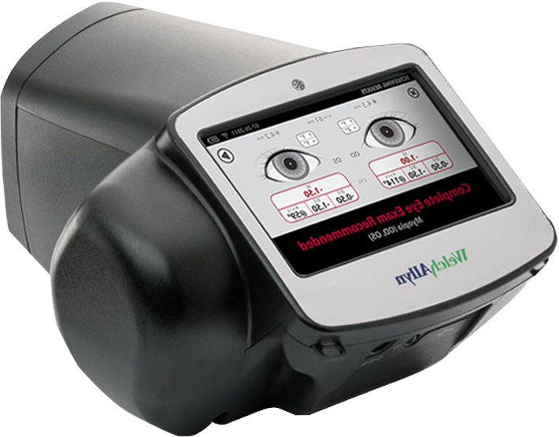

소아안과
에스안과
시력교정
노안/백내장
망막/황반변성
안구건조증
녹내장
소아안과
안성형
예약/상담
소아클리닉
소아클리닉
근시안약치료
드림렌즈
소아안과클리닉
성장기 어린이의 눈관리는
평생 시력에 매우 중요합니다
우리 아이의 밝은 미래
평생의 시력을 좌우하는 성장기 눈관리
성장 연령대에 맞는 안구검진을 통해
문제를 조기에 발견하여 교정 또는 치료
아이들의 시력은 태어난 후부터 꾸준히 발달하여
6~7살이 되면
완성되며 이 때의 시력이 평생 시력에 아주 중요한 역할
을
합니다.아이들은 표현과 인지가 부족하기 때문에 보호자가
아이들을 세심하게 관찰해야 합니다.
아이에게 이런 증상이 있다면!
정기검진뿐만 아니라
평소에 우리아이에게 안과적인 질환이 의심
된다면
병원에 내원하여
전문적인 검사
를 받아야 합니다.
생후 3개월 이후 눈을 잘 못 마주친다.
눈을 비비거나 만지려고 한다.
눈부심이 심하고, 자주 찡그린다.
보호자가 안질환이 있다.
사물을 볼 때 눈을 찡그린다.
눈동자 시선의 방향이 서로 다르다.
소아안과
검진 주기는 어떻게 될까?
아이의 성장기 에 맞춰 필수 검진을 받는 것이 중요하며 성인이 되기전까지는
6개월~ 1년마다 안과 검진을 하는 것을 권장
합니다.
신생아 ~ 만1세
사시 검사
동공반사 검사
외안부 검사
각막반사 검사
눈물길 검사
선천성백내장 검사
만1세 ~ 만5세
사시 검사
동공반사 검사
외안부 검사
입체시 검사
눈물길 검사
시력검사
만6세 ~ 20세
굴절이상검사
*
6개월 ~ 1년 사이에는정기적인 안과검진
소아 안과 정밀 검진 과정
에스안과는
다각적인 방면으로 아이들의 시력을 정확하게 검사
하여
조기에 안구질환을 발견하여 치료하고 있습니다.
01
사시 및 사위검사
02
정밀 안저 검사
03
현성굴절검사
04
각막곡률검사
05
세극등검사
06
조절마비 굴절 검사
07
색각검사
08
나안시력검사
에스안과, 국내 1호
로 유소아 굴절검사 장비 도입!

영유아 검진 장비, 비전스크리너
생후 6개월 이후부터 노인까지
굴절검사장비
비전스크리너의 가장 큰 장점은 1m 거리에서 수초 내에 빠른 측정이
가능합니다. 생후 6개월 이상이 아이도 검사진행이 가능하며 비접촉
측정 방식으로 청결에도 안전하며 굴절 이상과 사시를 조기에 발견해
빠른 시일 내에 치료를 할 수 있습니다.
소아 안과검진은
체계적인 에스안과
에스안과 소아안과 클리닉은
아이들의 연령에 따른 체계적인 검사
를 통해
정확한 치료
를 진행하고 있으며
전문 검진 장비를 보유함
으로써 보다 체계적으로 안과검사를 진행하고 있습니다.
안전
을
최우선
으로
여기는 병원
아이
를 위한
평생관리
시스템
최신 지식
과
최첨단
장비
체계적인
수술
진료
시스템
에스안과는 아이의 미래를 위해
항상 최고의것을
추구할 것을 약속
합니다.